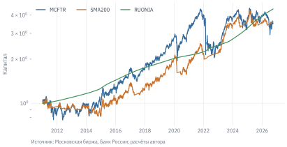
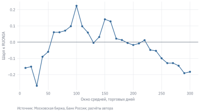

Представьте два отчёта об одной стратегии. В обоих случаях инвестор держит акции, пока индекс выше своей средней за 200 торговых дней, и выходит в деньги, когда индекс опускается ниже неё. Первый отчёт показывает плавный рост капитала, второй – заметные просадки и гораздо более скромную доходность. Окно средней одинаковое, данные одинаковые. Разница в том, когда программа разрешает купить и продать.
Такая ошибка может занимать одну строку. Если решение по цене закрытия сегодняшнего дня приносит доход от вчерашнего закрытия до сегодняшнего, инвестор получает прибыль за время, когда он ещё не знал о сделке. Компьютер послушно считает результат, но этот результат нельзя было получить на рынке.
Бэктест – историческая симуляция инвестиционного правила. Он соединяет прогноз, решение о позиции, исполнение сделки и учёт денег. В этой главе мы построим небольшой бэктест, разберём его по частям и увидим, почему даже аккуратно рассчитанная кривая капитала ещё не доказывает, что найдена работающая стратегия.
УведомлениеВ этой главе
Разделим момент появления сигнала, момент сделки и период получения дохода.
Учтём дивиденды, денежную ставку и издержки, проверим арифметику на маленьком примере.
Сравним правило скользящей средней с владением индексом и денежным рынком.
Проверим, что происходит при переборе параметров и последовательном выборе стратегии.
Обсудим диагностику переобучения и состав воспроизводимого отчёта.
15.1 От гипотезы к торговому правилу
Фраза «покупать растущие акции» не задаёт стратегию. Какие акции доступны? За какой период измеряется рост? Когда принимается решение? Что делать с деньгами после продажи? Пока эти вопросы не решены, одна идея допускает десятки реализаций, а исследователь легко выбирает ту, которая лучше выглядит задним числом.
Для учебного эксперимента зафиксируем правило: после закрытия сравниваем индекс полной доходности MCFTR с его средней за 200 наблюдений. Если индекс выше средней, желаемая позиция равна единице; иначе она равна нулю. Решение исполняется на следующем доступном закрытии, поэтому новая позиция начинает приносить доход ещё через один интервал между закрытиями. Коротких продаж и заёмных денег нет. Свободный капитал получает доход денежного рынка.
Экономическая гипотеза состоит в том, что устойчивые движения рынка иногда продолжаются достаточно долго, чтобы трендовый фильтр позволял участвовать в росте и пережидать часть падений. Её слабое место тоже понятно заранее: при частых разворотах стратегия будет покупать после роста и продавать после снижения. Поэтому разумный вопрос исследования – компенсирует ли защита от отдельных затяжных падений пропущенный рост, ложные переключения и издержки?
Мы не объявляем окно 200 оптимальным. Это исходное правило для разбора. Позже сравним несколько окон, но будем отдельно учитывать сам факт такого поиска.
Важное уведомлениеОсобенность данных: индекс нельзя купить
MCFTR – расчётный индекс полной доходности, а не цена торгуемого инструмента. Мы моделируем условный портфель, точно воспроизводящий индекс. В действительности понадобятся корзина акций или подходящий фонд; возникнут отклонение от индекса, расходы на управление и ограничения исполнения. Налоги и фактические даты поступления дивидендов здесь не моделируются. Поэтому результат главы – исследовательский ориентир, а не доходность доступного инвестиционного продукта.
15.2 Время в бэктесте
Пусть \(P_t\) – значение индекса на закрытии дня \(t\), а \(r_t=P_t/P_{t-1}-1\) – доходность, записанная в строке \(t\). Она относится к интервалу, который закончился на этой дате. Сигнал \(s_t\) появляется после получения \(P_t\):
После закрытия понедельника мы узнаём сигнал. Во вторник на закрытии совершаем сделку. Первая доходность новой позиции – изменение индекса от вторника до среды. В строке среды хранится сигнал понедельника, то есть позиция за интервал \(t\) равна \(s_{t-2}\). В данном соглашении нужен shift(2).
Момент
Что уже известно
Что происходит
Закрытие понедельника
Цена понедельника и вся прошлая история
Рассчитываем сигнал
Закрытие вторника
Сигнал понедельника
Исполняем решение и платим издержки
Закрытие среды
Изменение цены после сделки
Записываем первый доход новой позиции
Почему не shift(1)? Он приписал бы сигналу понедельника доход от понедельника до вторника. Это допустимо лишь при отдельном обосновании исполнения уже по цене закрытия понедельника. Например, решение должно быть сформировано до аукциона закрытия на информации, доступной к тому моменту. Окончательную цену закрытия заранее знать нельзя.
Если сделка исполняется на открытии вторника, нужны цены открытия и отдельный расчёт доходов от закрытия до открытия и от открытия до закрытия. Сдвиг массива не заменяет модель исполнения. Здесь мы выбираем более простое соглашение со следующим закрытием, которое можно проверить на дневных данных.
15.2.1 Данные и денежный счёт
Код
ix = data.load_index(["MCFTR", "IMOEX"], start="2009-01-01").pivot( index="date", columns="ticker", values="close").dropna()px = ix["MCFTR"]market = px.pct_change()# Денежный индекс: начисление за календарные дни между закрытиями.rate = data.load_ruonia(start="2010-01-01").set_index("date")["rate"] /100calendar = pd.date_range(rate.index.min(), px.index.max(), freq="D")daily_rate = rate.reindex(calendar, method="ffill")cash_index = (1+ daily_rate.shift(1).fillna(0) /365).cumprod()cash = cash_index.reindex(px.index).pct_change()START ="2011-01-01"# предыдущая история нужна для прогрева среднихmarket = market.loc[START:]cash = cash.reindex(market.index)assert market.notna().all() and cash.notna().all()assert px.rolling(300).mean().shift(1).reindex(market.index).notna().all()end_date =str(market.index[-1].date())
Деньги работают и в выходные. Поэтому нельзя разделить RUONIA на 252 и начислять её только в биржевые дни. Мы строим календарный денежный индекс, затем берём его изменения между датами наблюдений рынка. Это приближённая модель капитализации по RUONIA, а не точная реконструкция банковского счёта или фонда денежного рынка. Ставка применяется только к денежной позиции; торговый сигнал от неё не зависит.
Последнее наблюдение в эксперименте – 29.09.2026. 2026 год неполный. Через перерывы в торгах индексная доходность связывает последние доступные закрытия, тогда как денежный счёт продолжает начисляться по календарю. Мы не предполагаем, что в отсутствие котировок можно было совершить сделку.
15.2.2 Минимальный движок
Вектор target ниже – позиция после сделки на закрытии текущего дня. Вектор held – позиция, с которой инвестор пришёл к этому закрытию. Сначала считаем доход старой позиции, затем списываем расходы на переключение и устанавливаем новую.
Код
def sma_signal(prices, window=200):return (prices > prices.rolling(window).mean()).astype(float)def run_target(target, risky, money, cost=0.001):"""Позиции 0/1 после закрытия; cost – доля капитала за переключение.""" target = target.reindex(risky.index).fillna(0).astype(float)assert target.isin([0, 1]).all() held = target.shift(1, fill_value=0) traded = (target - held).abs() gross = held * risky + (1- held) * money net = (1+ gross) * (1- cost * traded) -1return pd.DataFrame({"return": net, "held": held,"target": target, "traded": traded})def backtest(signal, cost=0.001):# В строке t исполняем сигнал t-1; доход t получает старая позиция. target = signal.shift(1).reindex(market.index)return run_target(target, market, cash, cost)signal = sma_signal(px)bt = backtest(signal)
При каждом переходе 0→1 или 1→0 списывается 0,1% капитала после рыночного изменения. Это условная совокупная цена исполнения, а не тариф конкретного брокера. Переключение туда и обратно требует двух списаний. Для бинарной позиции такая запись особенно прозрачна: в начале теста капитал находится в деньгах, первый вход тоже оплачивается, в конце открытая позиция оценивается по рынку без принудительной продажи.
У дробных весов всё сложнее: они изменяются вместе с ценами, даже если инвестор ничего не делает. Оборот нужно считать относительно фактических весов перед сделкой, а не относительно прошлых целевых весов. Мы уже учитывали это в портфельном примере главы 11.5.
15.2.3 Проверка на трёх датах
Большая таблица метрик плохо помогает найти ошибку в одной сделке. Гораздо полезнее искусственный ряд, для которого результат легко посчитать вручную. Пусть в первый день мы покупаем актив, во второй он дорожает на 10%, а на закрытии третьего дня мы его продаём. Денежная ставка нулевая.
Первый день приносит только расход на вход, второй – доход уже купленного актива, третий – расход на выход. Если прибыль 10% появилась до покупки или комиссия взята один раз вместо двух, дальнейшие графики анализировать рано.
15.3 Как меняется результат при исправлении ошибок
Теперь сравним корректный по нашей временной схеме расчёт с заведомо неправильным. Во втором варианте сигнал по сегодняшнему закрытию умножается на доходность, которая уже закончилась. Отдельно отключим издержки и доход на деньги, чтобы видеть вклад каждого допущения.
Таблица 15.1: Одна стратегия при разных допущениях, с 2011 г. до конца снимка. Шарп рассчитан относительно RUONIA
CAGR
Волатильность
Шарп
Просадка
MCFTR
8,3%
23,1%
0,06
−53,5%
RUONIA
9,9%
0,6%
–
0,0%
SMA200
8,5%
14,4%
−0,02
−26,9%
SMA200 без издержек
9,4%
14,4%
0,04
−26,0%
SMA200 без дохода на деньги
5,3%
14,4%
−0,23
−32,1%
Ошибка времени
24,4%
13,4%
1,00
−14,5%
Ошибка времени даёт 24,4% годовых, тогда как исполнение на следующем закрытии с издержками – 8,5%. Разница возникла без новой информации и без улучшения прогноза. Именно поэтому проверка временной схемы важнее выбора красивой метрики.
Стратегия находится в акциях в 70% наблюдений и переключается примерно 8,5 раза в год. При такой частоте даже небольшая цена сделки имеет накопленный эффект. Но бесплатное исполнение само по себе не доказывает наличие преимущества: доходность нужно сравнить ещё и с денежным рынком.
В этом сравнении SMA200 уменьшает максимальную просадку, но её CAGR ниже денежной альтернативы, которая даёт 9,9% годовых. Защита капитала от части падений и высокая доходность – разные свойства. Кроме того, один дополнительный день задержки иногда случайно помогает, иногда мешает: более позднее исполнение не обязано давать худший результат на каждой конкретной истории.
Код
fig, ax = plt.subplots()for label, color in [("MCFTR", plot.BLUE), ("SMA200", plot.ORANGE), ("RUONIA", plot.GREEN)]: ax.plot((1+ paths[label]).cumprod(), label=label, color=color)ax.set(ylabel="Капитал", yscale="log")ax.legend(frameon=False, ncol=3)plot.source(ax, "Московская биржа, Банк России; расчёты автора")plt.show()

Рисунок 15.1: Капитал при владении индексом, следовании SMA200 и размещении денег под RUONIA. Начальный капитал равен единице
15.3.1 Какой бенчмарк нужен
У стратегии с денежной позицией два естественных вопроса. Первый: стоило ли вообще принимать рыночный риск вместо размещения денег под ставку? Второй: окупились ли переключения по сравнению с постоянным владением акциями? Для первого сравниваем с RUONIA, для второго – с MCFTR. Ни один бенчмарк не заменяет другой.
Индекс IMOEX не учитывает дивиденды. Если стратегия получает дивиденды, а её бенчмарк – нет, сравнение систематически благоприятствует стратегии. Это легко увидеть на тех же датах.
Ценовой индекс приносит 1,9% годовых против 8,3% у индекса полной доходности. Это разные экономические величины, хотя обе серии описывают один рынок.
Коэффициент Шарпа здесь рассчитан по избыточным доходностям: сначала вычитаем доход денег за тот же интервал, затем делим среднее на стандартное отклонение полученной серии. Для самого денежного счёта избыточная доходность тождественно нулевая, поэтому его Шарп не определён. Деление средней денежной доходности на небольшой разброс ставок дало бы впечатляющее число, но не измеряло бы премию за риск.
Годовая шкала волатильности и Шарпа через \(\sqrt{252}\) – обычное приближение. При автокорреляции и нерегулярных интервалах оно не является точным преобразованием. CAGR мы считаем по календарной длине периода; он учитывает накопление капитала, но ничего не говорит о неопределённости будущего результата.
15.3.2 Проверка издержек
Код
cost_rows = {}for basis_points in (0, 5, 10, 25, 50): net = backtest(signal, cost=basis_points /10000)["return"] cost_rows[f"{basis_points} б. п."] = metrics(net, cash)pd.DataFrame(cost_rows).T.style.format(pct_fmt).format(ru_fmt, subset=["Шарп"])
Таблица 15.2: Чувствительность SMA200 к условной стоимости одного переключения
CAGR
Волатильность
Шарп
Просадка
0 б. п.
9,4%
14,4%
0,04
−26,0%
5 б. п.
8,9%
14,4%
0,01
−26,5%
10 б. п.
8,5%
14,4%
−0,02
−26,9%
25 б. п.
7,1%
14,4%
−0,11
−31,8%
50 б. п.
4,8%
14,5%
−0,25
−41,6%
Один базисный пункт – 0,01 процентного пункта. Таблица – сценарный расчёт, а не оценка реальных расходов. Реальные издержки зависят от комиссии брокера и биржи, разницы цен покупки и продажи, размера заявки и её влияния на рынок. Одинаковые 10 б. п. для небольшой заявки в ликвидной акции и крупной заявки в редкоторгуемой бумаге – сильное допущение.
Для стратегии по отдельным акциям полезно дополнительно ограничить размер заявки долей прошлого дневного оборота. Если для ограничения используется полный оборот дня исполнения, доступный только вечером, снова возникает заглядывание в будущее. Нельзя также считать все заявки исполненными по цене закрытия при остановке торгов или отсутствии встречных заявок.
15.3.3 Издержки в единицах риска
Таблица показывает издержки в процентах, но удобнее сравнивать их с тем, что стратегия зарабатывает за риск. Carver (2019 г.) делит годовые издержки на годовую волатильность стратегии и получает их стоимость в единицах коэффициента Шарпа. Такая мера не зависит от плеча: удвоение позиции удваивает и издержки, и риск. Его практическое правило – предел скорости: издержки не должны превышать трети ожидаемого Шарпа до издержек. Запас нужен потому, что ожидаемая доходность известна плохо: если она окажется вдвое ниже, после издержек что-то всё равно останется.
Для SMA200 волатильность – около 14% в год, переключений – 8,5 в год. При 10 б. п. за переключение издержки отнимают всего 0,059 единицы Шарпа, при 50 б. п. – 0,30. В абсолютном выражении это немного. Но предел скорости считается от ожидаемого Шарпа до издержек, а у SMA200 относительно RUONIA он и без издержек всего 0,04: даже 10 б. п. превышают треть этой величины в несколько раз. Правило не делает стратегию прибыльной, а лишь показывает, есть ли у неё запас на издержки. У SMA200 этого запаса нет. Пример стратегии, которая подходит к пределу вплотную, – ежемесячная ребалансировка по моментуму в главе 16 (раздел 16.4.1).
15.4 Проверка данных и причинности
15.4.1 Тест усечения истории
Сигнал, рассчитанный на данных до некоторой даты, должен совпадать с сигналом на ту же дату после добавления будущих наблюдений. Это простая проверка причинности.
Проверка ловит, например, нормировку по среднему всей истории, центрированное скользящее окно и заполнение пропусков будущими значениями. Но она не доказывает, что исходная база была доступна инвестору: в сегодняшней выгрузке могут находиться пересмотренные данные, а состав бумаг мог быть выбран задним числом. Проверять нужно и код, и происхождение данных.
15.4.2 Бумаги, которые исчезли
Исследование на сегодняшнем списке акций отвечает на вопрос «что было бы с компаниями, дожившими до сегодня». Исторический инвестор не знал этот список. Для полноценного теста состав доступных бумаг нужно восстанавливать на каждую дату, включая выбывшие компании, изменения тикеров, сделки выкупа и приостановки торгов.
Исчезновение котировки не означает автоматически потерю 100% капитала: могла произойти смена тикера, реорганизация или выплата при выкупе. Но и переносить последнюю цену вперёд бесконечно, делая актив безрисковым, нельзя. Для каждого типа события нужно правило оценки и выхода. Справочники renames и delisted в qf.data помогают искать такие события; сами по себе они не восстанавливают все денежные потоки.
В этой главе индекс сокращает объём работы с отдельными корпоративными событиями, но не устраняет вопросы исполнимости. Если перейти от индексного примера к собственному портфелю, понадобятся история состава, доступные тогда данные, реальные дивиденды и правила обработки пропусков. Учебный снимок избранных акций не является полной исторической вселенной рынка.
СоветСначала предскажите
Программа выбирает десять акций с наибольшим средним оборотом за весь период 2011–2026 гг., а затем торгует ими начиная с 2011 г. Все сигналы сдвинуты на два дня. Осталось ли заглядывание в будущее?
Да: в выборе списка бумаг. Корректный сдвиг сигнала не исправляет отбор активов по будущей ликвидности.
15.5 Когда лучший параметр оказывается случайным
До сих пор мы проверяли одно правило. Обычно исследователь пробует окна 50, 100, 150 и 200 дней, пересечения двух средних, ограничения волатильности, разные наборы бумаг. Даже если в каждом расчёте нет утечки, лучшая конфигурация получает преимущество от самого соревнования.
Это похоже на выбор самого удачливого из участников, бросающих монету. В большой группе почти наверняка найдётся длинная серия успехов. Чтобы оценить её необычность, нужно знать, сколько участников пытались её получить.
sma_scores = sharpes.reindex([f"SMA{n}"for n inrange(10, 310, 10)])fig, ax = plt.subplots()ax.plot(range(10, 310, 10), sma_scores, marker="o", markersize=3, color=plot.BLUE)ax.axhline(0, color=plot.GREY, lw=0.8)ax.set(xlabel="Окно средней, торговых дней", ylabel="Шарп к RUONIA")plot.source(ax, "Московская биржа, Банк России; расчёты автора", offset=34)plt.show()

Рисунок 15.2: Коэффициент Шарпа относительно RUONIA при переборе окна средней. Все точки рассчитаны на одной истории
Из 49 конфигураций победила SMA100, её Шарп равен 0,22. Это описание результата поиска на этой истории. Оно не является оценкой качества заранее выбранного правила. Более того, настоящих попыток могло быть больше: смена начальной даты, метрики победы или набора параметров тоже использует информацию о результатах.
Соседние окна помогают оценить хрупкость вывода. Один высокий пик среди слабых соседей настораживает сильнее широкого участка похожих результатов. Однако выбор «красивого плато» после просмотра графика тоже является подбором. Он должен быть записан в журнале экспериментов и затем проверен на других данных.
15.5.2 Последовательный выбор без знания будущего
Вместо единственного победителя за всю историю можно каждый год выбирать правило по предыдущим годам, фиксировать его и применять в следующем году. Это проверяет уже процедуру выбора, а не только одну среднюю.
Сделаем такую проверку с 2014 г. Сетка правил заранее фиксирована. На начало каждого года выбираем максимальный Шарп за всю доступную прошлую историю. При смене правила учитываем фактическую позицию, чтобы не потерять расходы на переход между стратегиями. Новый выбор впервые исполняется на первом закрытии нового года; до него остаётся прежняя позиция.
Код
target_grid = pd.DataFrame({k: s.shift(1) for k, s in signals.items()})selected_target = pd.Series(0.0, index=market.loc["2014":].index)choices = {}for year insorted(selected_target.index.year.unique()): past = excess_grid.loc[:f"{year -1}-12-31"] score = past.mean() / past.std() chosen = score.idxmax() choices[int(year)] = chosen dates = selected_target.index[selected_target.index.year == year] selected_target.loc[dates] = target_grid.loc[dates, chosen]wf = run_target(selected_target, market.reindex(selected_target.index), cash.reindex(selected_target.index))# Тот же старт и та же оплата первого входа для фиксированного правила.fixed = run_target(target_grid[best_name], market.reindex(selected_target.index), cash.reindex(selected_target.index))wf_comparison = pd.DataFrame({"Ежегодный выбор": metrics(wf["return"], cash),"Победитель всей истории": metrics(fixed["return"], cash),"MCFTR": metrics(market.reindex(selected_target.index), cash),"RUONIA": metrics(cash.reindex(selected_target.index), cash)}).T
Таблица 15.3: Последовательный выбор и ретроспективный победитель на общем периоде с 2014 г.
CAGR
Волатильность
Шарп
Просадка
Ежегодный выбор
12,9%
13,3%
0,19
−22,6%
Победитель всей истории
15,4%
13,7%
0,35
−18,8%
MCFTR
10,5%
23,5%
0,10
−53,5%
RUONIA
11,0%
0,7%
–
0,0%
У ежегодного выбора нет доступа к доходностям будущего года. У строки «Победитель всей истории» такой доступ был на этапе выбора имени стратегии. Это разные эксперименты, даже если их кривые капитала построены одной функцией.
И всё же ежегодная процедура не превращает уже просмотренную историю в новый независимый тест. Мы выбрали саму сетку и способ ранжирования, зная этот рынок. Результат полезен как историческая проверка устойчивости. Для следующего шага нужно зафиксировать правило и дождаться новых данных либо использовать заранее отложенный период, который не участвовал в разработке. После изменения правила по результатам этого периода он перестаёт быть окончательным тестом.
15.6 Диагностика переобучения
15.6.1 PBO: как часто победитель теряет своё место
Метод CSCV делит историю на чётное число блоков. Для каждого способа выбрать половину блоков определяем лучшую конфигурацию на них и её ранг на остальных. Доля разбиений, в которых победитель оказывается ниже медианы остальных результатов, оценивает PBO (Bailey и др. 2017 г.).
Код
def estimate_pbo(excess, n_blocks=8): blocks = np.array_split(excess.to_numpy(), n_blocks) ranks = []for train_ids in itertools.combinations(range(n_blocks), n_blocks //2): test_ids = [i for i inrange(n_blocks) if i notin train_ids] train = np.concatenate([blocks[i] for i in train_ids]) test = np.concatenate([blocks[i] for i in test_ids]) score_train = train.mean(0) / train.std(0, ddof=1) score_test = test.mean(0) / test.std(0, ddof=1) winner = score_train.argmax() rank = stats.rankdata(score_test, method="average")[winner] ranks.append(rank / (excess.shape[1] +1))returnfloat(np.mean(np.asarray(ranks) <0.5)), len(ranks)pbo8, splits8 = estimate_pbo(excess_grid, 8)pbo10, splits10 = estimate_pbo(excess_grid, 10)
В нашем эксперименте PBO при восьми блоках равно 61% (70 разбиений), при десяти – 63%. Это частота неудачного ранжирования, а не вероятность будущего денежного убытка. Блоки здесь переставляются между обучением и проверкой, поэтому CSCV не заменяет последовательный тест во времени. Результат зависит от набора кандидатов и разбиения; малое PBO само по себе не гарантирует прибыль.
15.6.2 Дефлированный коэффициент Шарпа
DSR сравнивает наблюдаемый Шарп с порогом, повышенным из-за перебора, и учитывает длину выборки, асимметрию и четвёртый момент доходностей (Bailey и López de Prado 2014 г.). Условно: насколько убедителен победитель с учётом числа попыток, в которых он мог случайно появиться?
Число независимых попыток здесь не равно автоматически 49: соседние средние дают похожие позиции. Незарегистрированные неудачные идеи, напротив, увеличивают реальный объём поиска. Поэтому одна цифра DSR без журнала попыток и допущений о зависимости конфигураций создаёт ложную точность. Для учебного проекта полезнее честно показать всю сетку, последовательную проверку и чувствительность результата. Подробный расчёт DSR оставим дополнительным заданием; его нельзя трактовать как вероятность будущей прибыльности стратегии.
15.6.3 Сколько лет нужно, чтобы отличить стратегию от удачи
Даже без перебора у оценки коэффициента Шарпа большая ошибка. Если месячные доходности независимы и близки к нормальным, стандартная ошибка годового Шарпа, оценённого по \(T\) годам, приближённо равна (Lo 2002 г.)
За 16 лет нашей выборки стандартная ошибка Шарпа около 0,3 – 0,26. Чтобы стратегия с истинным Шарпом 0,3 отличалась от нуля на уровне t = 2, нужно около 46 лет данных; для Шарпа 0,5 – около 18 лет, для Шарпа 1 – около 6. Различить две стратегии с Шарпом 0,3 и 0,5 ещё труднее. Carver (2017 г.) делает из этого практический вывод: так как средние доходности по истории оцениваются очень неточно, а риск и корреляции – гораздо точнее, решения лучше опирать на оценки риска и на простые правила с заранее заданными параметрами, а не на подгонку по историческим доходностям.
Carver, Robert. 2017 г. Smart Portfolios: A Practical Guide to Building and Maintaining Intelligent Investment Portfolios. Harriman House.
15.7 Почему прогноз ARIMA не равен торговой прибыли
В прошлогоднем ноутбуке курса стратегия строилась вокруг ARIMA: оценить модель, получить прогноз, купить при положительном прогнозе. Между этими шагами скрываются два разных вопроса. Первый – правильно ли прогноз привязан ко времени. Второй – достаточно ли его величины, чтобы оправдать отказ от денежной доходности и оплатить сделки.
Если модель обучена до \(t-1\), вызов одношагового прогноза предсказывает \(t\), а не \(t+1\). Нельзя просто записать число в следующую строку и тем самым продлить горизонт. Между переоценками параметров состояние модели должно обновляться новыми наблюдениями; повторный вызов прогноза без обновления повторяет старый прогноз.
Для прозрачности возьмём AR(1), то есть ARIMA(1,0,0), для простых дневных доходностей MCFTR:
\[
r_t=c+\phi r_{t-1}+\varepsilon_t.
\]
В нашем соглашении решение после закрытия \(t\) исполняется на закрытии \(t+1\). Поэтому первая доходность позиции – \(r_{t+2}\), и сравнивать с денежной альтернативой нужно двухшаговый прогноз \(c+\phi(c+\phi r_t)\). Параметры переоцениваем раз в год только на прошлой истории. Для денежной альтернативы используем последнюю ранее наблюдавшуюся ставку, а для простоты – однодневное начисление; это приближение особенно грубо перед длинными выходными.
Таблица 15.4: Прогноз AR(1), преобразованный в позицию: тот же календарь исполнения и те же издержки
CAGR
Волатильность
Шарп
Просадка
AR(1)
7,9%
23,1%
0,04
−53,5%
SMA200
8,5%
14,4%
−0,02
−26,9%
MCFTR
8,3%
23,1%
0,06
−53,5%
RUONIA
9,9%
0,6%
–
0,0%
В этой реализации AR(1) даёт 7,9% годовых и Шарп к денежному рынку 0,04. По накопленному капиталу правило уступает деньгам. Небольшой положительный Шарп этому не противоречит: он использует среднюю арифметическую избыточную доходность, тогда как CAGR учитывает геометрическое накопление и потери от колебаний. Вывод относится к нашему правилу, горизонту и периоду; он не является доказательством бесполезности всего класса ARIMA.
Это намеренно простое торговое правило. Условие «прогноз выше ставки» не учитывает риск ошибки, вероятную продолжительность позиции и будущие расходы на выход. Небольшое изменение прогноза возле порога может вызывать частые сделки без существенного экономического преимущества. Добавление зоны бездействия способно снизить оборот, но её ширина станет ещё одним параметром поиска.
Сравнение моделей по AIC отвечает на вопрос о статистическом описании ряда. Оно не выбирает автоматически торговую стратегию с лучшей доходностью после издержек. Положительный прогноз тоже не равен предложению купить: он может быть ниже дохода денег. Поэтому отчёт о прогнозной модели и отчёт о стратегии должны содержать разные проверки.
15.8 Как оформить результат исследования
Хороший отчёт позволяет другому человеку восстановить, что именно было известно инвестору перед каждой сделкой. Для проекта достаточно краткого протокола и воспроизводимого ноутбука.
Гипотеза. Какой механизм предполагается и какой результат будет считаться её опровержением.
Данные. Источник, дата снимка, период, исторический состав бумаг, корректировки, пропуски и корпоративные события.
Временная схема. Когда доступны признаки, когда формируется сигнал, по какой цене и когда исполняется заявка.
Учёт капитала. Денежная ставка, дивиденды, комиссии, проскальзывание, ограничения объёма, способ оценки открытых позиций.
История поиска. Все испытанные варианты, включая отрицательные; отдельно период разработки и проверки.
Результат. Капитал, просадка, доходность, избыточный Шарп, оборот и чувствительность к издержкам рядом с бенчмарками на одинаковых датах.
Ограничения. Какие допущения особенно влияют на вывод и какие новые данные могли бы его изменить.
ИИ-ассистент может помочь написать движок или найти несогласованные даты. Но он способен столь же быстро сгенерировать сотню новых конфигураций, увеличив объём поиска. Записывать нужно не число запросов к ассистенту, а число реально просмотренных вариантов и причины изменений. Отрицательный результат при корректной методике – полноценный результат исследования.
Итоги
Бэктест начинается с временной схемы. При сигнале после закрытия и исполнении на следующем закрытии новая позиция получает доход только со следующего интервала.
Дивиденды, доход свободных денег и цена переключений могут существенно изменить сравнение. Для стратегии с выходом в деньги нужны и рыночный, и денежный бенчмарки.
Маленький пример с ручным расчётом и тест усечения истории находят ошибки, которые легко скрываются в длинной кривой капитала.
Перебор параметров создаёт преимущество у победителя даже без утечки в каждом отдельном расчёте. Проверять нужно всю процедуру выбора.
PBO и DSR помогают обсуждать переобучение, но не заменяют корректные данные, последовательную проверку и новые наблюдения.
Прогноз доходности превращается в стратегию только после задания горизонта, правила позиции и модели исполнения.
15.9 Упражнения
15.9.1 А. Понимание
Сигнал рассчитан после закрытия понедельника, сделка исполняется на открытии вторника. Какие цены нужны для расчёта первой доходности? Почему недостаточно умножить signal.shift(1) на доходность между закрытиями?
За год стратегия заработала 12%, индекс полной доходности – 9%, денежный рынок – 15%. Какие из утверждений верны: стратегия обогнала рынок; стратегия принесла положительную избыточную доходность к деньгам; торговые сигналы создали ценность? Какой дополнительный анализ нужен для последнего утверждения?
Целевые веса двух акций остаются 50/50. Одна выросла на 20%, другая не изменилась. Найдите фактические веса перед ребалансировкой и долю капитала, которую нужно переложить. Почему неизменность целевых весов не означает нулевой оборот?
PBO равно 40%. Можно ли сказать, что с вероятностью 40% инвестор потеряет деньги? Объясните, какое событие оценивается.
15.9.2 Б. Практика на данных
Повторите SMA200 для своей акции, используя adj_close. Сравните с владением этой акцией и денежным рынком на одинаковых датах. Укажите, какие допущения заложены в скорректированную цену.
Проверьте стоимость переключения 0, 10, 25 и 50 б. п. Посчитайте число переключений и долю времени в акции. Объясните чувствительность результата через эти величины.
Проведите тест усечения истории на трёх датах. Затем намеренно замените обычную среднюю на центрированную и покажите, что тест обнаруживает ошибку.
Разделите историю на несколько заранее указанных подпериодов. Покажите, зависит ли преимущество правила от одного кризиса. Не выбирайте новый параметр отдельно для каждого периода после просмотра результата.
15.9.3 В. Работа с ИИ-ассистентом
Попросите ассистента написать стратегию по скользящей средней. До запуска отметьте в коде момент доступности сигнала, момент сделки, период доходности и списание издержек. Проверьте код на трёх датах с известным ответом. Приложите исходный вариант, обнаруженные ошибки и исправления.
Передайте ассистенту таблицу всех вариантов из сетки и попросите назвать лучший. Затем попросите объяснить, как выбор победителя меняет интерпретацию его Шарпа. Проверьте, не выдаёт ли ответ исторический максимум за независимую оценку качества.
15.9.4 Г. Мини-исследование
Зафиксируйте одну гипотезу, две-три конфигурации, бенчмарки и критерий отказа от гипотезы. Проведите последовательную проверку, стресс по издержкам и аудит доступности данных. Сдайте журнал всех попыток и краткий вывод, включая отрицательный результат, если преимущество не подтверждается.
Дополнительно: реализуйте DSR по статье Bailey и López de Prado (2014 г.). Укажите единицы Шарпа, способ оценки моментов, предполагаемое число независимых попыток и чувствительность результата к этому числу. Объясните, почему для коррелированных доходностей стандартная формула требует дополнительной осторожности.
Вопросы для самопроверки
Что именно сдвигает shift(2) в нашем примере?
Почему RUONIA начисляется по календарю, а не по числу биржевых строк?
Почему тест усечения истории не выявляет все формы заглядывания в будущее?
Чем последовательный выбор отличается от применения лучшей конфигурации за всю историю?
Когда ранее отложенный тест перестаёт быть независимым?
Почему для торгового правила AR(1) здесь используется двухшаговый прогноз?
СоветОтветы
Он сопоставляет интервалу доходности сигнал, сформированный двумя наблюдениями ранее: после сигнала проходит одно закрытие до исполнения и ещё одно до записи первого дохода. Это следствие конкретной модели исполнения, а не универсальное правило.
Между соседними торгами могут пройти выходные или длительный перерыв. Деньги при этом продолжают приносить доход.
Код может быть причинным относительно предоставленной таблицы, но сама таблица могла быть пересмотрена, а бумаги – отобраны по будущим результатам.
Последовательный выбор использует для каждого решения только прошлую часть истории. Ретроспективный победитель выбран с использованием будущих результатов относительно начала торговли.
Когда его результат используют, чтобы изменить правило, параметры, признаки или способ оценки. Он становится частью разработки.
Сигнал после закрытия \(t\) исполняется на закрытии \(t+1\), поэтому первая доходность новой позиции относится к \(t+2\).
Что почитать
Bailey и др. (2017 г.) – вероятность переобучения бэктеста и метод CSCV.
Bailey и López de Prado (2014 г.) – дефлированный коэффициент Шарпа и поправка на множественный поиск.
López de Prado (2018 г.) – организация финансовых экспериментов и ограничения обычных схем проверки моделей.
Carver (2015 г.) и Carver (2019 г.) – системная торговля с точки зрения практика: издержки в единицах риска, «предел скорости», отказ от подгонки параметров.
Lo (2002 г.) – статистические свойства коэффициента Шарпа и его стандартная ошибка.
Bailey, David H., Jonathan M. Borwein, Marcos López de Prado, и Qiji Jim Zhu. 2017 г. «The Probability of Backtest Overfitting». The Journal of Computational Finance 20 (4): 39–69. https://www.davidhbailey.com/dhbpapers/backtest-prob.pdf.
Bailey, David H., и Marcos López de Prado. 2014 г. «The Deflated Sharpe Ratio: Correcting for Selection Bias, Backtest Overfitting, and Non-Normality». The Journal of Portfolio Management 40 (5): 94–107.
López de Prado, Marcos. 2018 г. Advances in Financial Machine Learning. Wiley.
Carver, Robert. 2015 г. Systematic Trading: A Unique New Method for Designing Trading and Investing Systems. Harriman House.
Carver, Robert. 2019 г. Leveraged Trading: A Professional Approach to Trading FX, Stocks on Margin, CFDs, Spread Bets and Futures for All Traders. Harriman House.
Lo, Andrew W. 2002 г. «The Statistics of Sharpe Ratios». Financial Analysts Journal 58 (4): 36–52.